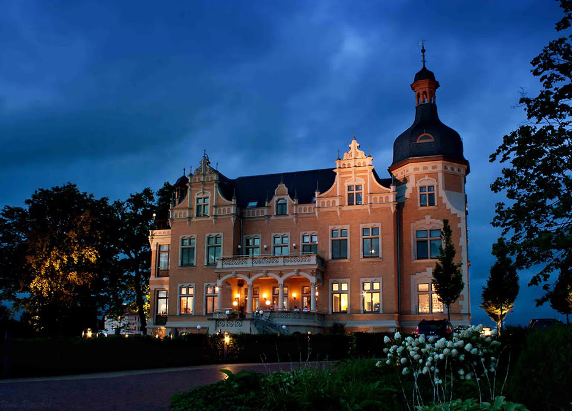
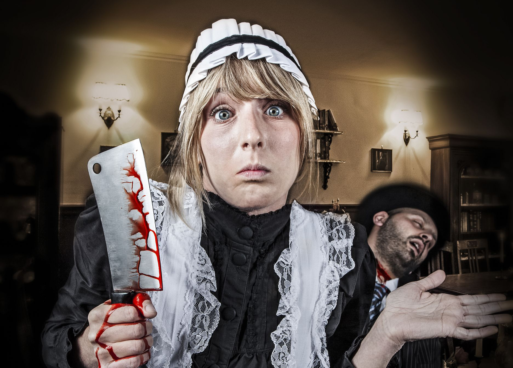
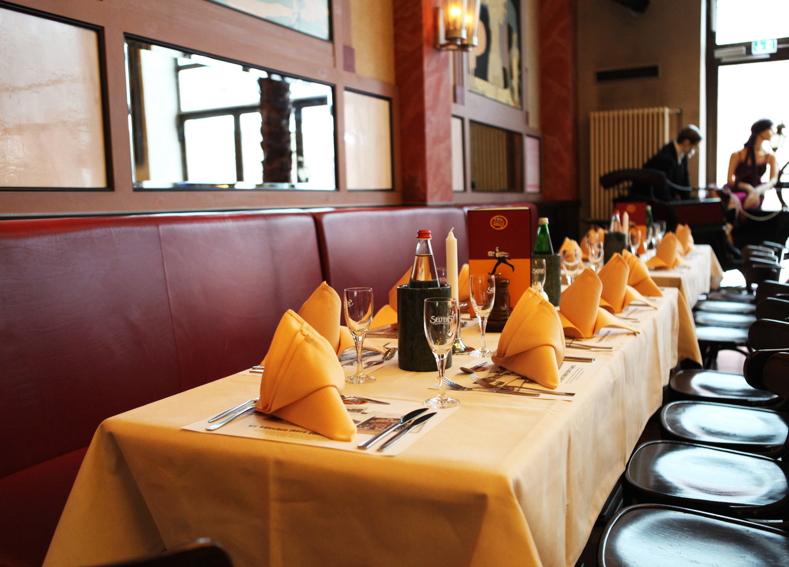

Herzlich Willkommen in der Villa Bernstein!
Die 1922 erbaute Villa Bernstein liegt im Vorort Meisterstadt Seken und wurde als Wohn- und Repräsentationshaus der Industriellenfamilie Breitenbach gebaut. Damals besaß sie eine Wohnfläche von 760 qm und einen wunderschönen Park. Die Wohnfläche wird heute als Restaurant und Café genutzt. Im Park befinden sich teilweise die Außenbereiche des Cafés, die sich mit schmiedeeisernen Toren und Zäunen, in das Gesamtbild eines nach dem Stil der englischen Gärten gestalteten Parks, einfügt. Seit 1964 befindet sich die Villa im Besitz der Familie Besten, die 2005 den Café- und Restaurantbetrieb eröffnet hat. Die ungestörte Lage und das altertümliche Flair der Villa bieten ein optimales Ambiente für Erlebnisgastronomie und so wurden 2010 die ersten Kriminaldinner veranstaltet, die bis heute großen Anklang finden.
Das Spiel: Krimidinner
Wieder ist ein Verbrechen geschehen. Jeden Samstagabend passiert in der Villa Bernstein um Punkt 19 Uhr ein Mord. Während sich alle Gäste beim 6-Gänge-Menü im Stile der 20iger Jahre entspannen, passiert das Verbrechen. Die Gäste, gekleidet in Abendgarderobe passend zum Thema des Abends, erleben hautnah die Kriminalgeschichte, angelehnt an alte Schwarzweißfilm-Kriminalfälle, und können durch genaue Beobachtungen zur Lösung des Falls beitragen. Es gibt keinen festen Ablaufplan. Nur die Rollen der Beteiligten sind fest verteilt. Einzig der Mörder weiß um seine Rolle als Meuchler, alle anderen Gäste sind ahnungslos.
Preis und Termin
Die Kosten des Dinners mit Krimiabend betragen: 150 Euro pro Person
Jeden Samstagabend ab 18 Uhr;
Das Menü / die Speisekarte

Hors d’œuvre ~ Die Vorspeise
Caramellisierte Scampi auf Büffelmozzarella mit Petersilie und frischen Birnenscheiben.
Enthält: gebratene und caramellisierte Scampi, Petersilie, Birne, Salz, Olivenöl.
Poisson ~ Das Fischgericht
Papillote de poisson à la piperade.
Enthält: Gebackenen Kabeljau, Paprika, Zwiebel, Möhren, Olivenöl, Pfeffer, Salz, diverse Kräuter aus der Provence.
Entrée ~ kaltes Zwischengericht
Zwiebelquiche mit Apfelstücken.
Enthält: Äpfel, Mehl, Butter, Ei, Sahne, Zwiebeln, Petersilie, Salz, Pfeffer, Zitrone.
Rôti ~ Der Braten
Rotweinbraten mit frischem saisonalem Salat.
Enthält: Rindfleisch, Rotwein, Cognac, Thymian, Lorbeer, Knollensellerie, Lauch.
Dessert ~ Petis Fours
Sammlung kleiner süßer Gebäckstücke.
Enthält: Mehl, Zucker, Eier, Milch, Kakao, Himbeersorbet, Kirschsahne, Erdbeercreme, Schokoladenraspeln
Kontakt und Anfahrt
Villa Bernstein
Familie Besten
Bernsteinallee 3
23456 Meisterstadt
Telefon: (0)456 4876410
E-Mail: info@villa-bernstein.de
Internet: www.villa-bernstein.de